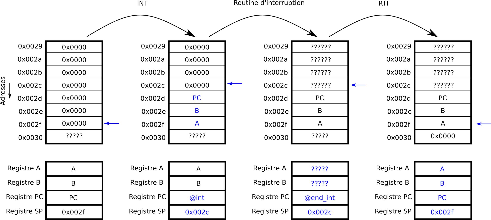

Jusqu'à maintenant, notre architecture vit dans son monde, elle est quasiment incapable de s'interfacer avec le monde extérieur. Nous avons en vérité déjà vus quelques sorties avec les afficheurs 7 segments mais elle n'est pas sensible à des entrées. On va ici étudier comment ajouter des périphériques d'entrée et être capable de répondre à des événements asynchrones (e.g. l'appui sur un bouton) produits lorsque ces périphériques sont utilisés. On va voir notamment:
Je vous rappelle que vous disposez de la carte de référence de l'architecture.
Le registre Interrupt Flag est là pour autoriser ou non les interruptions. En effet, si, par exemple, le pointeur de pile n'est pas encore initialisé, il ne faut surtout pas partir en interruption puisque c'est justement sur la pile qu'on mémorise le contenu des registres en quittant la routine d'interruption. Au démarrage de la machine, ce registre est à 0, on s'assurera d'autoriser les interruptions après l'initialisation. On introduit deux instructions pour gérer l'état de ce registre ainsi que deux instructions pour partir en interruption et revenir d'une interruption.
| Code Opération (8 bits) | Nom de l'opération | Nombre de mots | Description |
|---|---|---|---|
| 0xd0 | CLI | 1 |
Met à zéro le registre Interrupt Flag (IF). [IF := 0]. |
| 0xd4 | STI | 1 |
Met à un le registre Interrupt Flag (IF). [IF := 1]. |
| 0xe0 | INT | 1 | Départ en interruption. Le vecteur d'interruption doit être en RAM à l'adresse 0x0002. Cette adresse est chargeable dans le PC via le signal de contrôle ReadINTAdr. |
| 0xe8 | RTI | 1 | Retour d'une interruption en reprenant le déroulement du programme interrompu. |
On pourrait appeler depuis un programme l'interruption (en invoquant INT) mais on va ici voir comment partir en interruption lors qu'on appui sur le bouton. Si le bouton est pressé, alors INTR = 1. La détection d'une interruption se fait avant l'exécution de chaque instruction du programme principal (à l'adresse 0x00 de la ROM) avec des signaux CodeMCount particulier. Je vous rappelle la sémantique de CodeMCount qui permet de piloter le multiplexeur du MicroPC:
Si une interruption est détectée, il faut gérer l'interruption. La gestion de l'interruption se fait par les micro-instructions à l'adresse 0xe0 (INT). On va supposer ici que notre interruption n'est pas masquable, non interruptible. Aussi, je vous rappelle qu'une interruption doit être gérée de manière transparente pour le programme qui est entrain de tourner, c'est à dire qu'il faut sauvegarder les registres avant de partir vers le programme de l'interruption, qu'il faudra recharger après la routine d'interruption (RTI). Enfin, le programme exécuté lors de l'interruption sera ici par convention à l'adresse 0x0002 en RAM. Le microcode pour INT devra donc :
0x0000 JMP init 0x0002 JMP handleravec init l'adresse de votre programme principal et handler l'adresse du programme à exécuter lorsque l'interruption est levée (notez que "JMP handler" doit ici être à l'adresse 0x0002).
Le programme associé à l'interruption s'exécute alors (par exemple, il modifie la valeur d'une variable en RAM). A la fin du programme d'interruption, il faut revenir au programme interrompu en invoquant l'instruction RTI (ReTurn from Interrupt). Il faut donc remettre le chemin de données dans l'état dans lequel il était avant le départ en interruption, c'est à dire:
Les étapes de départ en interruption, exécution du programme d'interruption et de retour d'interruption sont illustrées ci-dessous.

Pour faciliter votre travail, je vous propose ci-dessous un outil qui permet des signaux de contrôle du chemin de données au code hexadécimal de la micro-instruction et vice-versa.
Je vous propose une application des interruptions en ajoutant un clavier et un écran à notre architecture. On aimerait que les caractères saisis sur le clavier (le clavier s'utilise en tapant des caractères tandis que le clavier est sélectionné avec le poke tool) soient affichés à l'écran. Dans l'architecture archi_irq_clavier.circ, le clavier est accessible en lecture à l'adresse 0x1003, l'écran est accessible en écriture à l'adresse 0x1004. Lorsqu'un caractère est saisi sur le clavier, une interruption est levée. L'interface avec le clavier est faite de telle sorte qu'à la réception du signal INTA, le caractère saisi est transféré dans un registre tampon. Pour l'écran, chaque fois qu'on écrit un caractère à l'adresse 0x1004, ce caractère est écrit à la suite des caractères précédents. Ecrivez la RAM telle que le programme principal incrémente un compteur et l'interruption affiche les caractères saisis au clavier sur l'écran.